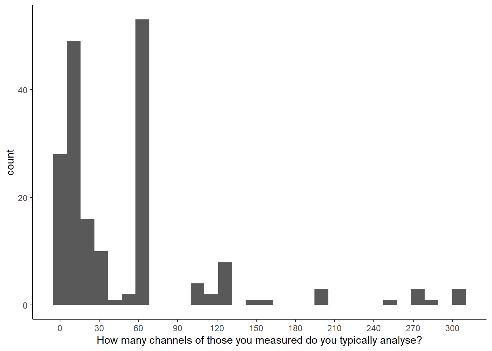
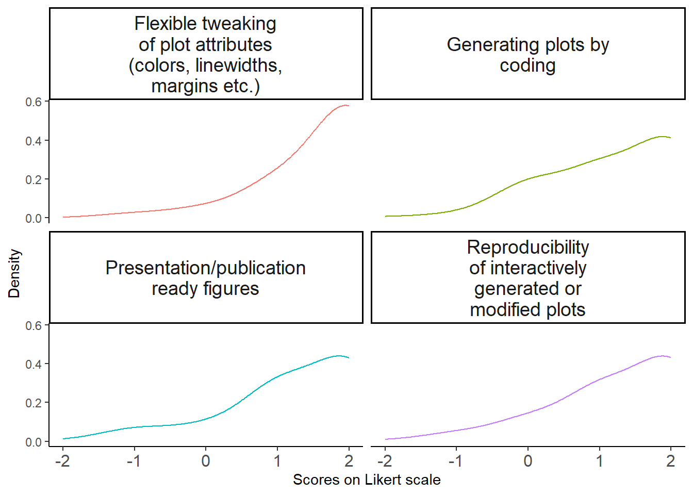
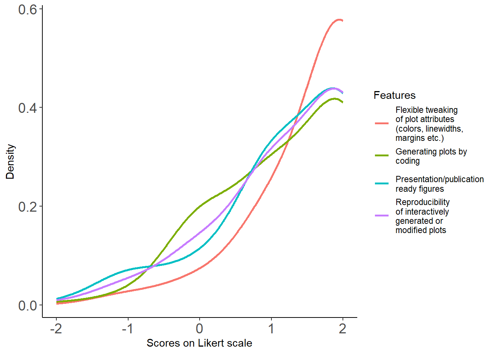
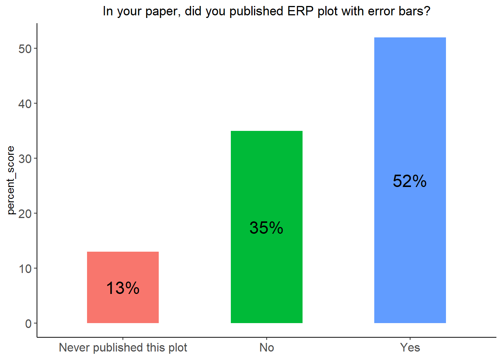
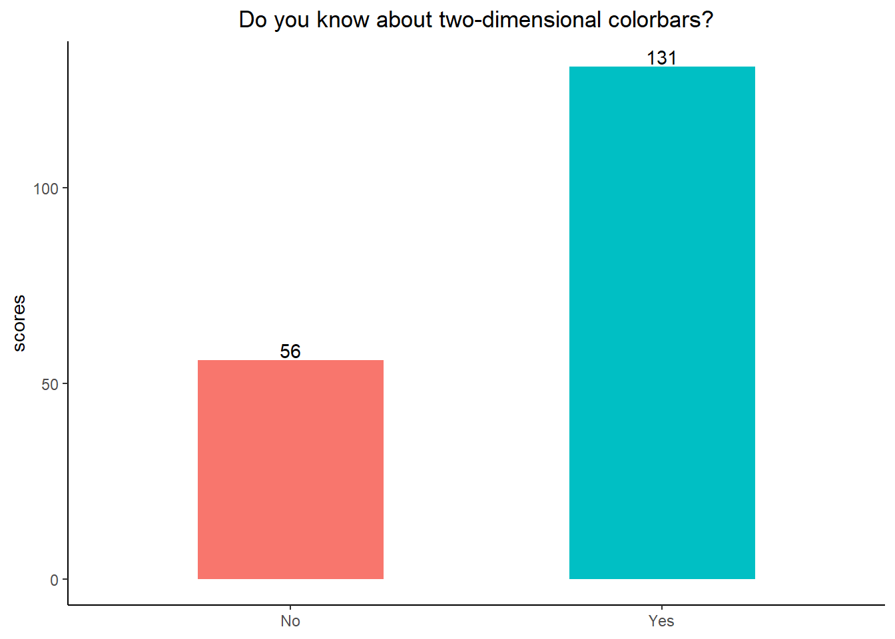
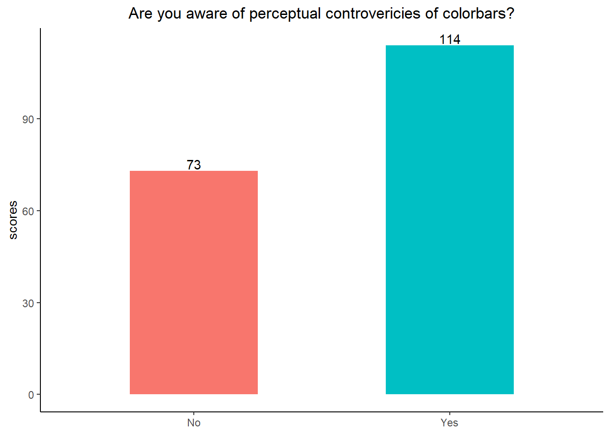

# upload to the git
library(readxl)
library(foreach)
library(stringr)
library(dplyr)
library(tokenizers)
library(data.table)
library(ggplot2)
library(plyr)
library(quanteda)
library(SemNetCleaner)
library(purrr)
library(tidytext)
library(tm)
library(topicmodels)
library(SnowballC)
library(Matrix)
library(text2vec)
library(tidyr)
library(kableExtra)exploration
Setup
data <- read_excel("data/results-survey3.xlsx")
data <- data[1:121] %>%
filter(.[[18]] !='Yes') # not analysed any EEG methodBio stats
Country
data.frame(table(data[8])) %>% arrange(desc(Freq)) %>% dplyr::rename(country_work = !!names(.)[1]) %>%
ggplot(data = ., aes(y = reorder(country_work, Freq), x= Freq)) +
geom_bar(stat="identity") + ylab("Country of work for participant") +
geom_text(aes(label = Freq),
hjust = -0.2)+ theme(legend.position="none")
Field
field <- as.data.frame(table(data[9])) %>% arrange(desc(Freq)) %>% head(3)
field$Freq[1] <- field$Freq[1] + 1 # from Others
field$Freq[2] <- field$Freq[2] + 1
field$Freq[3] <- field$Freq[3] + 1
field %>% dplyr::rename(area = !!names(.)[1]) %>%
ggplot(data = ., aes(x = reorder(area, Freq), y= Freq, fill = area)) +
geom_bar(stat="identity") + xlab("Area of research") +
geom_text(aes(label = Freq),
vjust = -0.2)+ theme(legend.position="none")
Area
t <- foreach(i = 1:nrow(data)) %do% tokenize_words(as.character(data[i, 11]))
tt <- foreach(i = 1:length(t)) %do% paste(unlist(t[i]), collapse = ' ')
area <- data.frame(matrix(tt)) %>% dplyr::rename(words = !!names(.)[1]) %>%
mutate(words = ifelse(str_detect(.[[1]], 'emot|empathy'), "affective neuroscience", words)) %>%
#mutate(words =ifelse(str_detect(.[[1]], 'spatial'), "spatial", words)) %>%
mutate(words =ifelse(str_detect(.[[1]], 'memory'), "memory", words)) %>%
mutate(words =ifelse(str_detect(.[[1]], 'hearing|audit'), "auditory", words)) %>%
mutate(words =ifelse(str_detect(.[[1]], 'cognition|consciousness|meditation|cognitive control|self|executive functions'), "cognitive control", words)) %>%
mutate(words =ifelse(str_detect(.[[1]], 'dbs'), "deep brain stimulation", words)) %>%
mutate(words =ifelse(str_detect(.[[1]], 'decision making|reward'), "decision making", words)) %>%
mutate(words =ifelse(str_detect(.[[1]], 'ageing'), "ageing", words)) %>%
mutate(words =ifelse(str_detect(.[[1]], 'social'), "social cognition", words)) %>%
mutate(words =ifelse(str_detect(.[[1]], 'olfac'), "olfaction", words)) %>%
mutate(words =ifelse(str_detect(.[[1]], 'communication|language|speech|biling|english|language processing'), "language and speech", words)) %>%
mutate(words =ifelse(str_detect(.[[1]], 'bci'), "bci", words)) %>%
mutate(words =ifelse(str_detect(.[[1]], 'sleep'), "sleep", words)) %>%
mutate(words =ifelse(str_detect(.[[1]], 'timing|time|temporal'), "time", words)) %>%
mutate(words =ifelse(str_detect(.[[1]], 'cognitive load|selective attention|attention|perception'), "attention and perception", words)) %>%
mutate(words =ifelse(str_detect(.[[1]], 'vis'), "vision", words)) %>%
mutate(words =ifelse(str_detect(.[[1]], 'developmental|development'), "development", words)) %>%
mutate(words =ifelse(str_detect(.[[1]], 'spatial|brain body|motor|motion'), "motor control", words)) %>%
mutate(words =ifelse(str_detect(.[[1]], 'diagnostics|disorder|psychiatry|epilepsy|autism|patients|therapy|psychopharmacology'), "mental disorders", words)) %>%
mutate(words =ifelse(str_detect(.[[1]], 'signal processing|event related potentials|method|sdf|ieeg'), "dsp", words))
area %>% group_by(words) %>% dplyr::summarise(Freq = n()) %>%
data.frame(.) %>% mutate(words = as.character(words)) %>% #arrange(desc(Freq)) %>%
ggplot(data = ., aes(y = reorder(words, Freq), x= Freq)) +
geom_bar(stat="identity") + ylab("Words") +
geom_text(aes(label = Freq),
hjust = -0.2)
Method
method <- data[14:17]
ch <- colnames(method)
ch1 <- foreach(i = ch) %do% str_split_i(i, "\\[", 2)
colnames(method) <- foreach(i = ch1) %do% str_sub(i, 1, -2)
d <- data.frame(rowSums(t(data.frame(foreach(i = colnames(method)) %do% ifelse(method[i]=="Yes", 1, 0)))))
d <- tibble::rownames_to_column(d, "plots")
colnames(d) <- c("method", "sum_scores")
d %>% arrange(desc(sum_scores)) %>%
ggplot(., aes(x = reorder(method, sum_scores), y = sum_scores, fill = method)) +
geom_col(stat = "identity") + labs(x = "Method", y = "Value", fill = "Method") +
theme_classic() + theme(legend.position="none")Warning in geom_col(stat = "identity"): Ignoring unknown parameters: `stat`
Experience
Papers
data[19] %>% dplyr::rename(papers = !!names(.)[1]) %>% filter(papers < 100) %>% ggplot(data = ., aes(papers)) +
geom_histogram() +
labs(x ="How many published papers/preprints do you have, where you used EEG, MEG or iEEG analysis?")`stat_bin()` using `bins = 30`. Pick better value with `binwidth`.
# PCA for clustering it Position
#na.omit(data[13]) # recode Others
as.data.frame(table(na.omit(data[12]))) %>% dplyr::rename(position = !!names(.)[1]) %>%
arrange(desc(Freq)) %>%
ggplot(data = ., aes(y = reorder(position, Freq), x= Freq, fill = position)) +
geom_bar(stat="identity") + ylab("Position") +
geom_text(aes(label = Freq),
hjust = -0.2)+ theme(legend.position="none")
Years
data %>% filter(.[[20]] < 50) %>% ggplot(data = ., aes_(as.name(names(data)[20]))) +
geom_histogram() + scale_x_continuous(breaks=seq(0, 30, 5)) +
labs(x ="Years of experience with EEG, MEG, or iEEG analysis")Warning: `aes_()` was deprecated in ggplot2 3.0.0.
ℹ Please use tidy evaluation idioms with `aes()``stat_bin()` using `bins = 30`. Pick better value with `binwidth`.
Self-assessed level
table(data[21]) %>% data.frame()%>% dplyr::rename(level = !!names(.)[1]) %>%
ggplot(data = ., aes(x = level, y= Freq, fill = level)) +
geom_bar(stat="identity") + xlab("Self-assessed level") +
geom_text(aes(label = Freq), vjust = -0.2) + theme(legend.position="none") +
scale_x_discrete(limits = c("Beginner", "Intermediate", "Expert"))
Code contribution
table(data[22]) %>% data.frame()%>% dplyr::rename(level = !!names(.)[1]) %>%
ggplot(data = ., aes(x = reorder(level, Freq), y= Freq, fill = level)) +
geom_bar(stat="identity") + xlab("Code contribution") +
geom_text(aes(label = Freq), vjust = -0.2) + theme(legend.position="none")Channels
How many channels do you typically measure?
data %>% ggplot(data = ., aes_(as.name(names(data)[23]))) +
geom_histogram() + scale_x_continuous(breaks=seq(0, 300, 30)) +
labs(x ="How many channels do you typically measure?")`stat_bin()` using `bins = 30`. Pick better value with `binwidth`.
How many channels do you typically measure?
data %>% filter(.[[24]] < 500) %>% ggplot(data = ., aes_(as.name(names(data)[24]))) +
geom_histogram() + scale_x_continuous(breaks=seq(0, 300, 30))+
labs(x ="How many channels of those you measured do you typically analyse?")`stat_bin()` using `bins = 30`. Pick better value with `binwidth`.
# plots should be combinedSoftware usage
frequency
na.omit(data[51]) %>% nrow()[1] 20other <- c(rep("Custom scripts",each=9), "4DBTi", rep("letswave", 3), "mTRF", "RAGU", "IGOR Pro", "EEGProcessor", "ELAN", "WinEEG") %>% table(.) %>% data.frame(.) %>% rename_at(vars(colnames(.)), ~ c("soft", "sum_scores"))vec <- names(data[25:50]) %>% str_split_i(., "\\[", 2) %>% str_sub(., 1, -2)
software <- data[25:50] %>%
rename_at(vars(colnames(.)), ~ vec) %>%
mutate_at(vars(vec), function(., na.rm = FALSE) (x = ifelse(.=="Yes", 1, 0)))
d <- data.frame(rowSums(t(software))) %>% tibble::rownames_to_column(., "soft") %>%
rename_at(vars(colnames(.)), ~ c("soft", "sum_scores")) %>%
rbind(., other) %>% dplyr::group_by(soft) %>% dplyr::summarise(sum_scores = sum(sum_scores)) %>%
arrange(., desc(sum_scores))
d %>% filter(sum_scores >= 1) %>%
ggplot(data = ., aes(y = reorder(soft, sum_scores), x= sum_scores, fill = soft)) +
geom_bar(stat="identity") + ylab("Soft") +
geom_text(aes(label = sum_scores),
hjust = -0.2) + theme(legend.position="none")
cooccurence
# how to order by diagonal matrix
# how to add others
software <- data[25:50]
ch <- colnames(software)
ch1 <- foreach(i = ch) %do% str_split_i(i, "\\[", 2)
ch1 <- foreach(i = ch1) %do% str_sub(i, 1, -2)
d1 <- foreach(i = colnames(software)) %do% ifelse(software[i]=="Yes", 1, 0)
c <- crossprod(matrix(unlist(d1), ncol = 26))
rownames(c) <- ch1
colnames(c) <- rownames(c)
diag.order <- order(diag(c), decreasing = FALSE)
mat_reordered <- c[diag.order, diag.order]
melt(mat_reordered) %>% ggplot(., aes(x=Var1, y=Var2)) +
geom_tile(aes(fill = value)) +
geom_text(aes(label = value)) +
scale_fill_gradient(low = "white", high = "red") +
theme(legend.title = element_blank(),
axis.title=element_blank(),
axis.text.x = element_text(angle = 90, vjust = 1, hjust=1)) Important features
features <- data[52:60]
ch <- colnames(features)
ch1 <- foreach(i = ch) %do% str_split_i(i, "\\[", 2)
colnames(features) <- foreach(i = ch1) %do% str_sub(i, 1, -2)
features <- features %>% mutate_at(c(colnames(features)),
funs(recode(.,
"Very important"= 2, "Important"= 1, "Neutral"= 0,
"Low importance"= -1, "Not at all important" = -2 ))) %>%
colSums(., na.rm =T) %>% data.frame(.) %>% tibble::rownames_to_column(., "Feature") %>%
arrange(desc(.))
colnames(features) <- c("Feature", "sum_scores")
features %>% kbl() | Feature | sum_scores |
|---|---|
| Flexible tweaki.. | 284 |
| Presentation/pu.. | 222 |
| Reproducibility.. | 215 |
| Generating plot.. ]...6 | 213 |
| Combine with a .. | 115 |
| Zooming or pann.. | 104 |
| Speed of plotting | 77 |
| Interactive sel.. | 68 |
| Generating plot.. ]...5 | -68 |
# divide by number of people
# individual plots
# correlation with experience factorFamiliarity with plots
Recognition
vec <- c("line", "butterfly", "topo", "topo_array", "topo_map", "erp_image", "parallel", "channel_image")
familiar <- data[61:68] %>% rename_at(vars(colnames(.)), ~ vec) %>%
mutate_at(vars(vec), function(., na.rm = FALSE) (x = ifelse(.=="Yes", 1, 0)))
data.frame(rowSums(t(familiar))) %>% tibble::rownames_to_column(., "plot") %>%
rename_at(vars(colnames(.)), ~ c("plot", "sum_scores")) %>%
arrange(., desc(sum_scores)) %>%
ggplot(data = ., aes(y = reorder(plot, sum_scores), x= sum_scores, fill=plot)) +
geom_bar(stat="identity") + ylab("plot") +
theme(legend.position="none", plot.title = element_text(hjust = 0.5)) +
ggtitle("Select ERP plot you are familiar with")
Plotting
vec <- names(data[ , grepl( "Have you ever" , names(data))]) %>% str_split_i(., "\\.....", 2) %>% as.numeric()do_vec <- function(vec, data){
t1 <- table(data[vec[1]])
for (i in 2:length(vec)) {
t <- table(data[vec[i]])
t1 <- rbind(t1, t)
}
rownames(t1) <- array(paste0("t_", 1:length(vec)))
return(t1)
}
tab <- do_vec(vec, data) %>% data.frame() %>% tibble::rownames_to_column(., "plots") %>%
gather(., answer, score, `N.A`:`Yes`, factor_key=TRUE) %>%
mutate(answer = str_replace(answer, 'N.A', "No"))Warning in rbind(t1, t): number of columns of result is not a multiple of vector
length (arg 1)tab %>%
ggplot(., aes(x = plots, y = score, fill = answer)) +
geom_bar(position = "dodge", stat = "identity") +
labs(x = "Category", y = "Value", fill = "Group") +
theme_classic() + theme(plot.title = element_text(hjust = 0.5)) +
ggtitle("Have you ever plotted this kind of figure?")
Recognition and plotting
vec <- names(data[ , grepl( "Have you ever" , names(data))]) %>% str_split_i(., "\\.....", 2) %>% as.numeric()
plot_names <- c("line", "butterfly", "topo", "topo_array", "topo_map", "erp_img", "parallel", "channel_img")
do_vec <- function(vec, data, plot_names){
t1 <- table(data[vec[1]])
for (i in 2:length(vec)) {
t <- table(data[vec[i]])
t1 <- rbind(t1, t)
}
rownames(t1) <- plot_names #array(paste0("t_", 1:length(vec)))
return(t1)
}
tab <- do_vec(vec[2:length(vec)], data, plot_names) %>% data.frame() %>% tibble::rownames_to_column(., "plots") %>%
gather(., type, plotted, `N.A`:`Yes`, factor_key=TRUE) %>%
filter(type == "Yes") %>% dplyr::select(-type)
familiar <- data[61:68] %>% rename_at(vars(colnames(.)), ~ plot_names) %>%
mutate_at(vars(plot_names), function(., na.rm = FALSE) (x = ifelse(.=="Yes", 1, 0)))Warning: Using an external vector in selections was deprecated in tidyselect 1.1.0.
ℹ Please use `all_of()` or `any_of()` instead.
# Was:
data %>% select(plot_names)
# Now:
data %>% select(all_of(plot_names))
See <https://tidyselect.r-lib.org/reference/faq-external-vector.html>.data.frame(rowSums(t(familiar))) %>% tibble::rownames_to_column(., "plot") %>%
rename_at(vars(colnames(.)), ~ c("plots", "recognized")) %>% merge(., tab) %>%
gather(., type, score, recognized:plotted, factor_key=TRUE) %>%
ggplot(., aes(x = reorder(plots, -score), y = score, fill = type)) +
geom_bar(position = "dodge", stat = "identity") +
labs(x = "Plot type", y = "Number of users", fill = "Level of familiarity\nwith plot") +
theme_classic() + geom_text(aes(label = score, group = type), position = position_dodge(width = .9), vjust = -0.2) + theme(plot.title = element_text(hjust = 0.5)) +
ggtitle("Familiarity with plots")
Up or down
table(data[79]) %>% data.frame() %>% rename_at(vars(colnames(.)), ~ c("position", "scores")) %>%
ggplot(., aes(x = position, y = scores, fill = as.factor(scores))) +
geom_bar(position = "dodge", stat = "identity", width=0.5) + theme_classic() +
theme(axis.title.x=element_blank(), legend.position="none", plot.title = element_text(hjust = 0.5)) +
geom_text(aes(label = scores, group = position), position = position_dodge(width = .9), vjust = -0.2) +
ggtitle("In ERP plot, should positive voltages be plotted upwards, or downwards?")
Error bars
table(data[74]) %>% data.frame() %>% rename_at(vars(colnames(.)), ~ c("position", "scores")) %>%
ggplot(., aes(x = position, y = scores, fill = as.factor(scores))) +
geom_bar(position = "dodge", stat = "identity", width=0.5) + theme_classic() +
theme(axis.title.x=element_blank(), legend.position="none", plot.title = element_text(hjust = 0.5)) +
geom_text(aes(label = scores, group = position), position = position_dodge(width = .9), vjust = -0.2) +
ggtitle("In your paper, did you published ERP plot with error bars?")
data[75] %>% filter(!is.na(.)) %>% table() %>% data.frame() %>% rename_at(vars(colnames(.)), ~ c("position", "scores")) %>%
ggplot(., aes(x = position, y = scores, fill = as.factor(scores))) +
geom_bar(position = "dodge", stat = "identity", width=0.5) + theme_classic() +
theme(axis.title.x=element_blank(), legend.position="none", plot.title = element_text(hjust = 0.5)) +
geom_text(aes(label = scores, group = position), position = position_dodge(width = .9), vjust = -0.2) +
ggtitle("In your figure, what did error bars depicted?")
data[76] %>% filter(!is.na(.)) %>% table()What did the er.. [Other]
68% CI, which is close to SEM under normality
1
95% ci over channel means
1
i'm not sure but i think it was sem
1
median absolute deviaton or quantiles
1
Sd
1 Baseline
periods
table(abs(data[77])) %>% data.frame() %>% dplyr::rename(baseline = !!names(.)[1]) %>%
ggplot(data = ., aes(x = baseline, y= Freq)) +
geom_bar(stat="identity") + xlab("Recomended baseline in msec") +
scale_y_continuous(breaks=seq(0, 60, 5)) + theme_classic() +
theme(legend.position="none", plot.title = element_text(hjust = 0.5)) +
geom_text(aes(label = Freq, group = baseline), position = position_dodge(width = .9), vjust = -0.2)
justification
# If you don't want to provide a number on previous question, please, provide a justification
# depends on what??
# manual categorization of depending
j <- data %>%
dplyr::rename(q = !!names(.)[78]) %>% filter(!is.na(q)) %>% dplyr::select(q) %>%
mutate(q = tolower(q)) %>% mutate(q = gsub('depends in|depending on', 'depends on', q),
dependson = ifelse(grepl("depends|depend", q), q, NA)) %>%
separate(dependson, into = c("a","b"), sep = "depends on |depend on ") %>%
dplyr::select(-a) %>%
dplyr::rename(dependson = b) #%>%
j %>% filter(is.na(dependson))# A tibble: 17 × 2
q depen…¹
<chr> <chr>
1 minimum 200ms for erps and theta or beta power <NA>
2 should match the duration of baseline-correction <NA>
3 as a rule of thumb, i would plot at least 1/3 of the duration (post-… <NA>
4 half of the illustrated task interval <NA>
5 in general i would always try to plot the full baseline period used … <NA>
6 the same duration as the one used for baseline correction <NA>
7 at least 300, preferably more <NA>
8 put down 100, but that's just what i typically use, might be diff fo… <NA>
9 at least the baseline window used for the baseline correction? <NA>
10 in this case it has sense as the -100 : 0 ms is not flat <NA>
11 1/3 to 1/2 of the post-stimulus time plotted <NA>
12 i would plot the same baseline period as the one used for baseline c… <NA>
13 i would recommend to plot the baseline period corresponding to the b… <NA>
14 in general, i think it should be roughly the same length as the time… <NA>
15 assuming the baseline is -250 to 0 ms, i would like to see activity … <NA>
16 the actual baseline length you have in the experiment <NA>
17 ideally, the entire duration for the baseline correction should be d… <NA>
# … with abbreviated variable name ¹​dependsonj %>% filter(!is.na(dependson)) %>% select(dependson)# A tibble: 32 × 1
dependson
<chr>
1 "the design of course"
2 "the topic"
3 "the study. if you have interstimulus interval of 1 second and you expect to…
4 "the experiment and research question"
5 "the rest period between the measured evoked responses. e.g. it can be very …
6 "the analysis"
7 "paradigm, 100-300 ms range preferable"
8 "the task design"
9 "the type of response (eg for mrcps response is seen before actual movement …
10 "the task design, paradigm and signal of interest."
# … with 22 more rows #View()Colorbars
table(data[117]) %>% data.frame() %>% rename_at(vars(colnames(.)), ~ c("position", "scores")) %>%
ggplot(., aes(x = position, y = scores, fill = as.factor(scores))) +
geom_bar(position = "dodge", stat = "identity", width=0.5) + theme_classic() +
theme(axis.title.x=element_blank(), legend.position="none", plot.title = element_text(hjust = 0.5)) +
geom_text(aes(label = scores, group = position), position = position_dodge(width = .9), vjust = -0.2) +
ggtitle("Are you aware of perceptual controvericies of colorbars?")
table(data[118]) %>% data.frame() %>% rename_at(vars(colnames(.)), ~ c("position", "scores")) %>%
ggplot(., aes(x = position, y = scores, fill = as.factor(scores))) +
geom_bar(position = "dodge", stat = "identity", width=0.5) + theme_classic() +
theme(axis.title.x=element_blank(), legend.position="none", plot.title = element_text(hjust = 0.5)) +
geom_text(aes(label = scores, group = position), position = position_dodge(width = .9), vjust = -0.2) +
ggtitle("Do you know about two-dimensional colorbars?")
table(data[119]) %>% data.frame() %>% rename_at(vars(colnames(.)), ~ c("position", "scores")) %>%
ggplot(., aes(x = position, y = scores, fill = as.factor(scores))) +
geom_bar(stat = "identity", width=0.5) + theme_classic() +
theme(axis.title.x=element_blank(), legend.position="none", plot.title = element_text(hjust = 0.5)) +
geom_text(aes(label = scores, group = position), position = position_dodge(width = .9), vjust = -0.2) +
ggtitle("Would you like to use a two-dimensional colorbar\nin your publications, if it was easily available?")
Feedback
feed <- data[120] %>% dplyr::rename(feed = !!names(.)[1]) %>% filter(!is.na(feed), feed != "-") #%>% View()
feed # A tibble: 54 × 1
feed
<chr>
1 "Not only 2-d, but also CIRCULAR colorbars please\r\nThey are essential to v…
2 "I think a great feature to have would be a selection of colors for comparis…
3 "Great effort. Good luck!"
4 "stop pushing this jet bullshit on me so hard"
5 "Make it very modular. It will be useless to experts or people trying someth…
6 "This is more of a tangential comment, but one issue for me is lack of aware…
7 "Easy creation of different types of error bars on ERP plots (shading)"
8 "I use R for most analyses and visualization but matlab/eeglab/Erplab (for n…
9 "Dynamic head montage videos"
10 "I feel like Matlab is not very easy to implement in public and interactive …
# … with 44 more rowsTime of finishing survey in minutes
median(as.numeric(data$`Total time`)) / 60[1] 14.0435